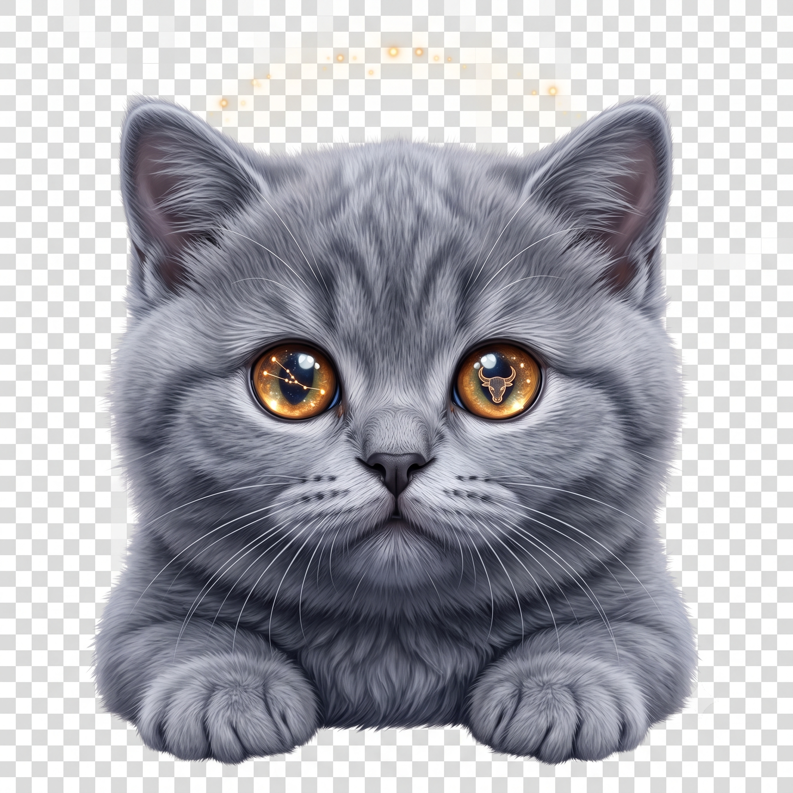

실제 천문 엔진(Astronomy Engine) 기반 30도 통블록 홀사인 & 1:1 심층 상담 🐾
상승점·MC·하우스는 계산하지 않고, 행성의 별자리 위주로 풀이해요. 정오 기준이라 달은 별자리가 다를 수 있어요.

-
홀사인 궤도의 행성 배치가 말해주는 5대 인생 영역 종합 판정 리포트
행성 카드를 탭하면 인라인 아코디언 상세 분석과 원터치 챗봇 질문이 펼쳐집니다 🐾
별빛 궤도를 실시간 스캔하며 [궤도 분석 ➔ 우주적 판정 ➔ 실전 솔루션]으로 상담한다냥 🐾
홀사인 소울 냥이 분석과 5대 심층 리포트가 완성되었습니다.
지금 네 마음을 괴롭히는 우주 먼지가 있니? 무엇이든 물어보라냥 🐾 질문 시 참치캔 1캔이 소진되며 무관한 일상 질문은 자동 환불됩니다 🐟